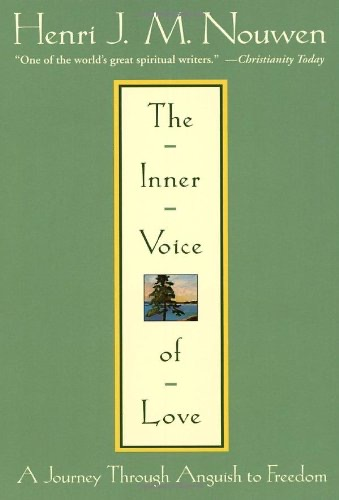

Nouwen's secret journal, written from December 1987 to June 1988, the most painful months of his life. He had just found his first real home at L'Arche Daybreak, a community with people with intellectual disabilities. Then a close friendship broke off and everything collapsed: self-esteem, sleep, appetite, faith. He left the community for six months of intensive care with two guides. After almost every session he wrote one short command to himself, a "spiritual imperative." Eight years later, friends persuaded him to publish them.
How it happened
What makes the book so honest is the timing. People were hugging him, thanking him for bringing them closer to God, admiring his spiritual insight, and at exactly that moment he felt useless, unloved and abandoned by God. "It was as if the house I had finally found had no floors." He cried for hours, could not be reached by arguments, lost interest in food, music and nature. Inside was "one long scream."
The trigger was a friendship that had touched him as nothing had before and opened a door that had been locked since childhood. But the space it opened was far bigger than any one friend could fill. He became possessive and dependent, and when the friendship had to be interrupted he fell apart. He knew intellectually that only God could meet that need. "But all this knowledge didn't help me in my pain."
Use it like salt
Draw one, or browse by theme. The text is my short summary of each imperative, not Nouwen's wording. Keep the ones that speak to you; they are remembered on this device only.
The pictures he gives himself
Two contrasts he keeps returning to
The thread through all 62
Read together, the imperatives circle one centre: you are a child of God and deeply loved, and that love is enough. Almost every practical instruction follows from it. Only someone who knows they are fully received can give without expecting a return, set boundaries without feeling cruel, accept other people's limits without feeling rejected, and stand upright in sorrow instead of collapsing into self-pity.
Nouwen is careful not to make this anti-human. The love that came through his friend was "true, God-given love" and must not be denied as idolatry; the task is to see it as part of a greater love. The body is not an enemy but must be "brought home." And the desire for communion is not neurosis; it comes from God. What he fights is not need but the addiction of need: he calls his inexhaustible need for affection an addiction and applies the first step of AA, admitting powerlessness.
He hears the voice of darkness say: you are worthless, unlovable, not welcome; it would have been better if you had not lived. He answers with Psalm 139 and the words he sums up as everything Jesus says: "Know that you are welcome."
The final imperative is a choice, made every moment: to listen to the self-rejecting voice or to the voice that says "I love you, I am with you." He even applies it to memory: you can remember this time as a failed attempt at rebirth, or as the time God began something new. "Your future depends on how you decide to remember your past."
Eight years later
Nothing changed suddenly. Afterwards he tiptoed around his community, afraid of falling into the old traps. He noticed the change first in others, who trusted him instead of being embarrassed. Most of all, the friendship that had broken was gradually renewed, which he had never dared to hope. Dark moments still came almost daily, but he had learned to recognise them, to "catch the darkness early," not to let sadness grow into depression, and even to point out the little clouds to his friend and ask for help letting them pass. What looked like a curse became fertile ground for trust, hope and love.
Keep